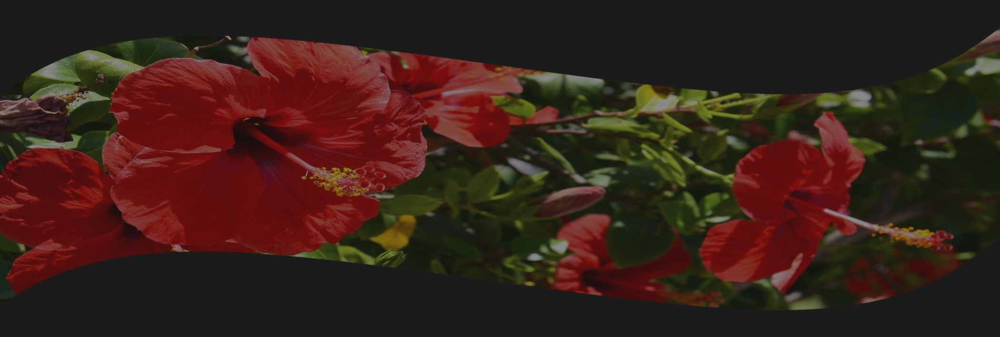

Przygotowanie henny do pracy
Jak już wielokrotnie wspominałam, czysta henna dostępna jest w formie sproszkowanych liści. Aby móc nałożyć ją na włosy, należy ją odpowiednio rozrobić. Do przygotowania pasty barwiącej potrzebujesz:
- oczywiście hennę :) - ok. 50 gramów dla średnio gęstych włosów do ramion
- wodę destylowaną bądź demineralizowaną - ok. 1 szklanki
- dodatek zakwaszający - henna najlepiej wydziela barwnik w środowisku kwaśnym
- termometr gastronomiczny bądź lekarski bezdotykowy (z reguły mają opcję "dom")
- dodatek nawilżający - niekonieczny, ale zalecany ze względu na zdarzające się przesuszenie włosów po użyciu ziół
- opcjonalnie niekwaśne dodatki tonujące i/lub kondycjonujące
Jeśli planujemy wykorzystać żel lniany, należy go przygotować tuż przed rozrabianiem henny. Można ugotować go od razu z dodatkami tonującymi i zakwaszającymi.
Gotowy napar należy odcedzić i ostudzić do ok. 50-60 stopni Celsjusza. To bardzo ważne, aby woda nie była zbyt gorąca, bo może to "zabić" barwnik henny. Następnie można stopniowo zalewać sproszkowane zioła i mieszać do uzyskania konsystencji zbliżonej do greckiego jogurtu.
Jeśli zostaną niewielkie grudki, to nie należy się nimi na tym etapie przejmować - większość z nich powinna z czasem zniknąć. Gotową pastę należy przykryć i odstawić w ciepłe miejsce na co najmniej dwie godziny lub do czasu wydzielenia barwnika -
najprościej zrobić po dwóch godzinach test na skórze: odrobinę pasty położyć na skórze i po kilku minutach spłukać. Jeśli została na skórze intensywnie ruda plamka, to znaczy, że hennę możemy już nakładać, ale najpierw musimy odpowiednio przygotować włosy.